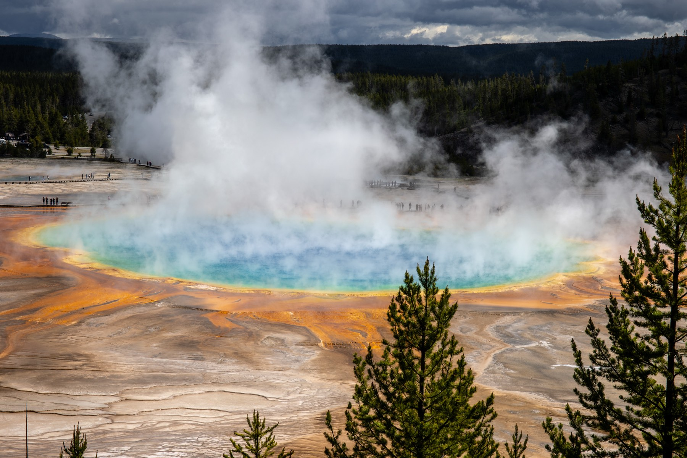
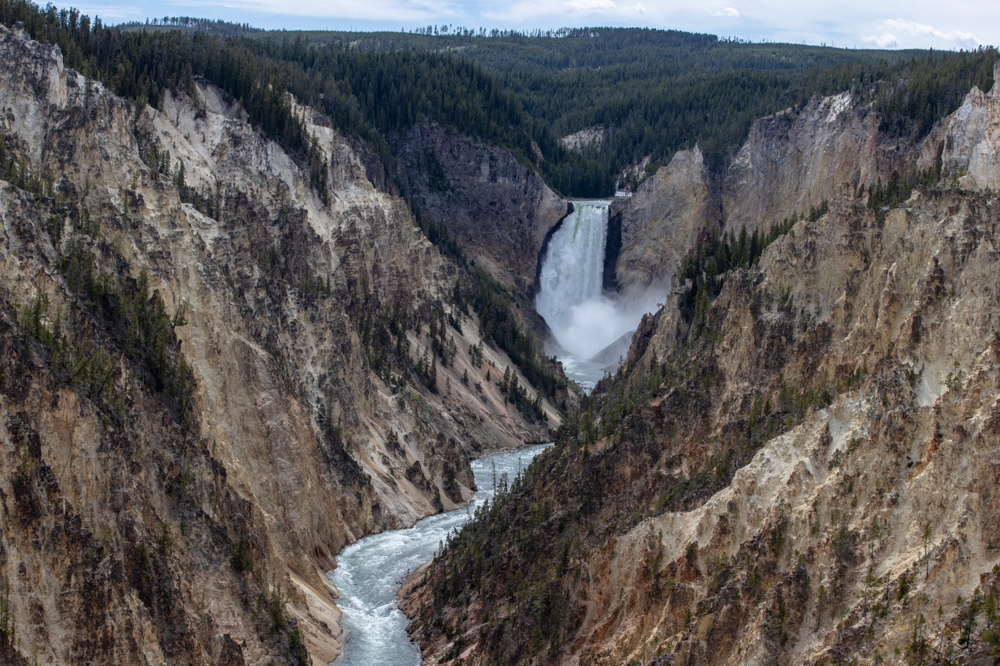
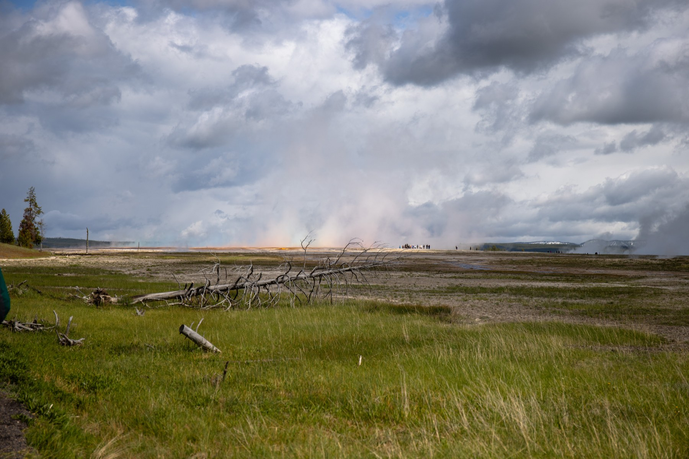
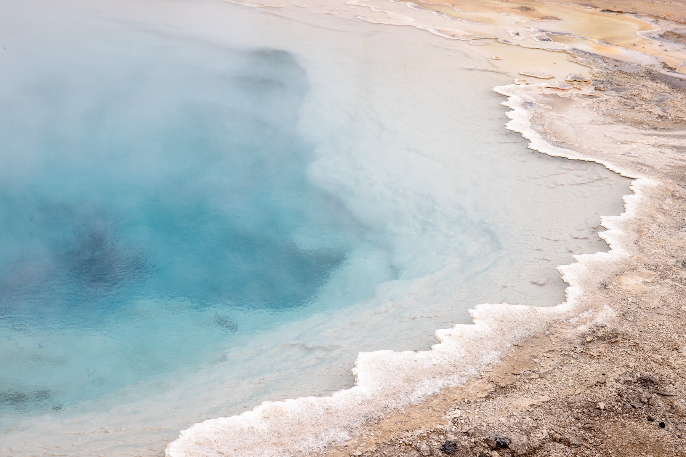
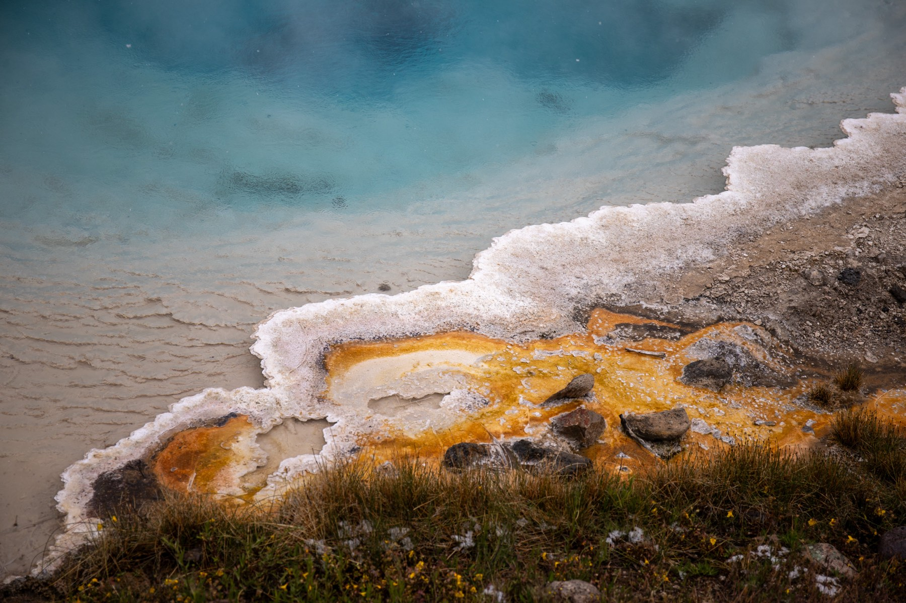
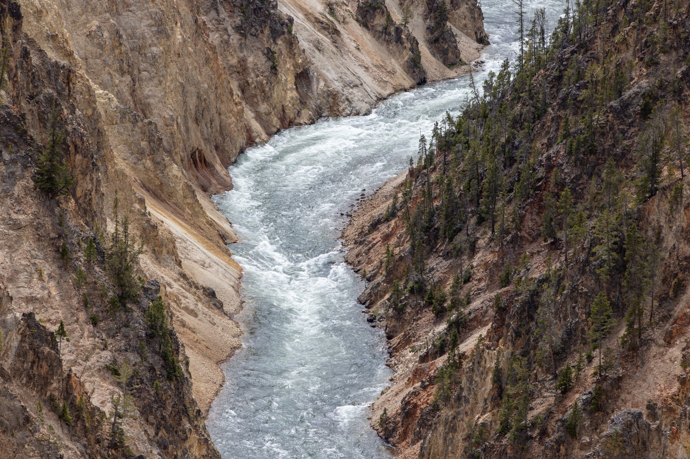
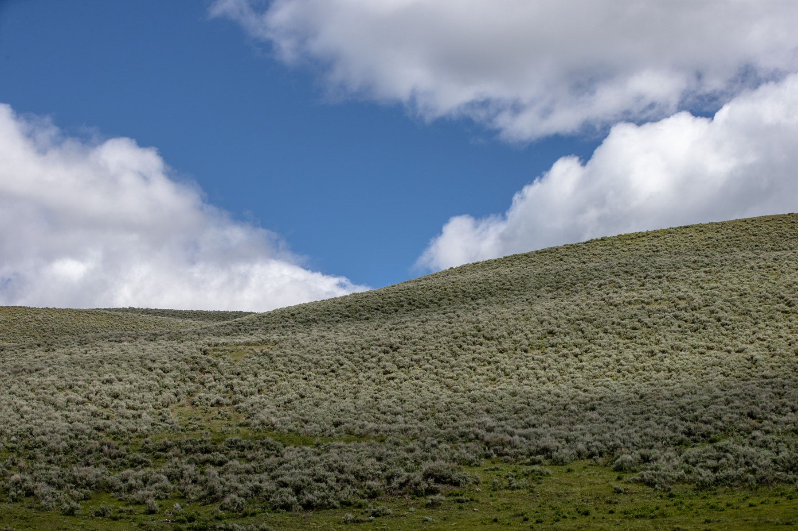

Home
Welcome to my corner of the web
This site is a work-in-progress portfolio built while learning HTML & CSS. Use the nav above to check out the About, Bio, and Contact pages -- each one demonstrates a different piece of the toolkit: semantic markup, an image gallery, and a real contact form.
Recent shots
A few frames from a recent trip to Yellowstone -- geysers, wildlife, and canyon views.







